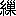

私は
豊前の
小倉に足掛四年いた。その
初の年の十月であった。六月の
霖雨の最中に来て借りた
鍛冶町の家で、私は寂しく夏を越したが、まだその夏のなごりがどこやらに残っていて、暖い日が続いた。毎日通う役所から四時過ぎに帰って、十畳ばかりの
間にすわっていると、
家主の飼う蜜蜂が折々軒のあたりを飛んで行く。二台の人力車がらくに行き違うだけの道を隔てて、向いの家で糸を
縒る
車の音が、ぶうんぶうんと聞える。糸を縒っているのは、片目の老処女で、私の所で女中が宿に下がった日には、それが手伝に来てくれるのであった。
或る日役所から帰って、机の上に読みさして置いてあった Wundt の心理学を開いて、半ペエジばかり読んだが、気乗がせぬので止めた。そしていつもの車の音を聞いてぼんやりしていた。
そこへ女中が知らぬ人の名刺を持って来た。どんな人かと問えば、洋服を
著た若い人だと云う。とにかく通せと云うと、すぐにその人が
這入って来た。
二十を
僅に越した位の男で、快活な、人に遠慮をせぬ
性らしく見えた。この人が私にそう云う印象を与えたのは、多く外国人に
交って、
識らず知らずの間に、遠慮深い東洋風を棄てたのだと云うことが、後に私にわかった。
初対面の挨拶が済んで私は来意を尋ねた。この人の事を私はＦ君と書く。Ｆ君の言う所は
頗る尋常に異なるものであった。君は私とは同じ
石見人であるが、私は
津和野に生れたから
亀井家領内の人、君は
所謂天領の人である。早くからドイツ語を専修しようと思い立って、東京へ出た。所々の学校に籍を置き、
種々の教師に
贄を執って見たが、今の立場から言えば、どの学校も、どの教師も、自分に満足を与えることが出来ない。ドイツ人にも
汎く交際を求めて見たが、丁度日本人に日本の国語を系統的に知った人が少いと同じ事で、ドイツ人もドイツ語に精通してはいない。それから日本人の書いたドイツ文や、日本人のドイツ語から訳した国文を
渉猟して見たが、どれもどれも
誤謬だらけである。その
中でＦ君は私が最も自由にドイツ文を書き、最も正確にドイツ文を訳すると云うことを発見した。しかし東京にいた時の私の生活はいかにも繁劇らしいので、接近しようとせずにいた。その私が小倉へ来た。そこで君はわざわざ東京から私の跡を追って来た。これから小倉にいて、私にドイツ語を学びたいと云うのである。
これを聞いて私はＦ君の自信の大きいのに驚き、又私の買い
被られていることの
甚しいのに驚いて、暫く君の顔を見て黙っていた。後に思えば気の毒であるが、この時は私の心中に、
若し狂人ではあるまいかと云う
疑さえ
萌していた。
それから私は取敢ずこんな返事をした。君は私を買い被っている。私はそんなにえらくはない。しかし私の事は
姑く
措くとして、君は果して東京で師事すべき人を求めることの出来ぬ程、ドイツ語に通じているか。失敬ながら私はそれを疑う。こう云いつつ、私は机の上にあった Wundt を取って、Ｆ君の前に出して云った。これは少し専門に
偏った本で、単にドイツ語を試験するには適していぬが、若しそれでも
好いなら、そこで一ペエジ程読んで、その意味を私に話して聞かせて貰いたい。若し他の本が好いなら、小説もあり雑誌もあるから、その方にしようと云った。
Ｆ君は私の手から本を受取って、題号を見た。そして「心理学ですね」と云った。
「そうだ。君それが読めるか。」
「読めないことはありますまい。この本の事は聞いていただけで、まだ見たことはなかったのです。しかし私が Paedagogik を研究した時、どうしても心理学から這入らなくては駄目だと思って、少し心理学の本を
覗いて見たことがあります。どこを読みましょう。」こう云って本を
飜しているうちに、巻末に近い Die seele と云う一章が出た。「そこを少し読んで聞かせ給え」と、私は云った。
Ｆ君は少し間の悪そうに、低い声で五六行読んだ。声は低いが発音は好い。すらすらと読むのを私は聞いていて、意味をはっきり聞き取ることが出来た。
「もう好いから、君その意味を言って聞かせ給え」と、私は云った。
Ｆ君は殆ど術語のみから組み立ててある原文の意味を、苦もなく説き明かした。
私は再び驚いた。Ｆ君は狂人どころでは無い。君の自信の大きいのは当然のことである。私は云った。
「それだけ読めれば、君と僕との間に、何の
軒輊すべき所も無いね。」
「なに。そんな事はありません。追々質問します」と、Ｆ君は云った。
これでＦ君が
漫りに大言
荘語したのでないと云う事だけはわかった。しかしそれ以外の事は、私のためには総て疑問である。私はこの疑問を徐々に解決しようと思った。只その中に急に知らなくてはならぬ事が一つある。それはＦ君の生活状態である。身の上である。
私はこう云った。「それは君のドイツ語を研究する相談相手になれと云うことなら、僕はならないことはない。ところで君はどうして小倉で暮して行く積りだ。」こう云ったが、Ｆ君は黙っている。私はすぐに畳み掛けて露骨に云った。「君金があるのか。」
Ｆ君は黙ってはいられなくなった。「金は東京から来る汽車賃に皆使ってしまったのです。国から取れば、多少取れないこともありませんが、目前の用には立ちません。当分あなたの所に置いて下さるわけには行きますまいか。」
この
詞は私の評価に少からず影響した。Ｆ君のドイツ語の
造詣は、初め狂人かとまで思った疑を打ち消して、大いに君を重くしたのに、この詞は又頗る君を軽くした。
固より人間は貧乏だからと云って、その
材能の評価を減ずることはない。しかしＦ君が現に一銭の
貯もなくて、私をたよって来たとすると、前に私を讃めたのが、買被りでなくて、世辞ではあるまいか、
阿諛ではあるまいかと疑われる。修行しようと云う
望に、寄食しようと云う望が附帯しているとすると、Ｆ君の私を目ざして来た動機がだいぶ不純になってしまう。人間の行為に全く純粋な動機は殆ど無いとしても、Ｆ君の行為を催起した動機は、その不純の程度が
稍甚しくはあるまいかと疑われる。
これまで私に従学したいと云って
名告り出た人に、Ｆ君のような造詣のあったことは
曾て無い。この側から見れば、Ｆ君は奇蹟である。しかしこれまで私の家に寄食したいと云って来た人に、一文の貯もなかったことは幾らでも有る。この側から見ればＦ君は平凡な
徼幸者である。そう云う徼幸者を遇する道は、私のためには熟路である。私はこの熟路を行くに、奇蹟たる他の一面を顧慮して、多少の手加減をすれば好いのである。
私は決して徼幸者に現金をわたさない。これが徼幸者に対する一つの原則である。そこで私はＦ君にこんな事を言った。君はドイツ語が好く出来る。私の君を知っているのは只それだけである。それだけでは、君と同居しようとまでは、私には思われない。そこで私は君を、私の心安い宿屋に紹介する。宿屋では私に対する信用で、君を泊まらせて食わせて置く。その間に私は君のために位置を求める。それも、君だけの材能があって見れば、多少の
心当がないでもない。若し
旨く行ったら、君は自ら
贏ち得た報酬で宿屋の勘定をするが好い。それが旨く行かず、又故郷からも金が来なかったら、宿屋の勘定だけを私が引き受ける。私にはそれ以上の約束は出来ない。それで好いかと、私は云った。
Ｆ君は私の
詞を聞いて、少し勝手が違うように、予期に反したように感じたらしかったが、とにかく同意した。多分君は私が許諾するか、拒絶するかと思っていただろう。それに私の答は許諾でもなければ、拒絶でもなかったから、君のためには意外であったかと思われる。とにかく君は、格別
難有がる様子もなく、私に同意した。
私は使を遣って下役の人を呼んで、それに用事を言い含めた。そしてＦ君を連れて、
立見と云う宿屋へ往かせた。立見と云うのは小倉停車場に近い宿屋で、私がこの土地に
著いた時泊った家である。主人は四十を越した
寡婦で、
狆を可哀がっている。
怜悧で、何の話でも好くわかる。私はＦ君をこの女の手に托したのである。
――――――――――――
私がＦ君に多少の心当があると云ったのは、丁度その頃小倉に青年の団体があって、ドイツ語の教師を捜していたからである。そこで早速その団体の世話人に話して、君を
聘することにさせた。立見の勘定は私が払わなくても好いことになった。
Ｆ君は
殆毎日のように私の所へ遊びに来た。話はドイツ語の事を離れぬが、別に私に難問をするでもない。新に得た地位に安んじて、熱心に初学者にドイツ語を教える方法を研究して、それを私に相談する。そう云う話を聞くうちに、私は次第に君と私とのドイツ語の知識に大分相違のあることを知った。それは互に得失があるのである。君は語格文法に
精しい。文章を分析して細かい事を云う。私はそんな時に始て聞く術語に出くわして驚くことがある。しかし君の書いたドイツ文には漢学者の謂う和習がある。ドイツ人ならばそうは云わぬと、私が
指
する。君が服せぬと、私は旅中にも持っている Reclam 版の Goethe などを出して証拠立てる。こんな応対がなかなか面白いので、私も君の来るのを待つようになった。
天気の好い土曜、日曜などには、私はＦ君を連れて散歩をした。狭い小倉の町は、端から端まで歩いても歩き足らぬので、海岸を
大里まで
往ったり、汽車に乗って
香椎の方へ往ったりした。格別読む暇もないのに、君はいつも隠しにドイツの本を入れて歩く。Goeschen 版の認識論や民類学などである。なぜかと問うと、暇があったら読もうと思うのが楽しみだと、君は答える。ひどく知識欲の強い人である。
二三週間立ってから、或る日私はＦ君がどんな生活をしているかと思って、役所からの帰掛に立見をおとずれた。丁度お
上さんが
門口から一匹の小犬を
逐い出しているところであった。「どうも内の狆が
牝だもんですから、いろんな犬が来て困ります」と云って置いて、「畜生々々」と顧み
勝に出て行く犬を叱っている。狆は帳場から、よそよそしい様子をして見ている。
「Ｆ君はどうしていますか」と、私は問うた。
「あなたがお世話なさるだけあって、変った方でございますね」と、お上さんは
笑顔をして云った。
「わたくしが世話をするだけあって変っているのですって。それは困るなあ。一体どう変っています。」こう云いつつ、私は帳場の前に腰を掛けた。
「いいえ、大そう好い方でございますが、もうこんなに朝晩寒くなりましたのに、まだ
単物一枚でいらっしゃいます。寒い時は、上からケットを
被って本を読んでいらっしゃるのでございます。」お上さんは私に座布団を出して、こう云った。
「はてな。工面が悪いのかしら。」
独言のように私は云った。
「そうじゃございません。お泊になってから少し立ちますと、今なら金があるからと
仰ゃって、今月末までの勘定を済ませておしまいになった位でございます。」もう十一月に入っているから、Ｆ君は先月青年団から貰った金で前払をしたのである。
とにかく逢って見ようと思って、私は二階へ上がった。立見の家では、奥の離座敷に上等の客を留めることにしている。次は
母屋の中庭に向いた二階である。表通に向いた二階の小部屋は、細かい格子の窓があって、そこには客を泊らせない。Ｆ君は一番安い所で好いと云って、そこに落ち著いた。
「Ｆ君、いるかね」と云って声を掛けると、君は内から障子を開けた。なる程フランネルのシャツの上に
湯帷子を著ている。細かい格子に日を
遮られた、薄暗い窓の
下に、手習机の古いのが据えてあって、そこが君の席になっている。私は
炭団の活けてある小火鉢を
挟んで、君と対座した。
この時すぐに目を射たのは、机の向側に
夷麦酒の空箱が
竪に据えて本箱にしてあることであった。しかもその箱の半以上を、茶褐色の背革の大きい本三冊が占めていて、跡は小さい本と雑記帳とで
填まっている。三冊の大きい本は
極新しい。薄暗い箱から、背革に記してある金字が光を放っている。私は首を
屈めて金字を読もうとした。
「Meyer の小ですよ」と、Ｆ君が云った。
「そうか。ひどく立派な本になったね。それに僕の持っているのは二冊物だが。」
「それは古いのです。これは南江堂に来たのを見て置いたから、郵便
為換を
遣って取り寄せました。」
「しかしこんなに
膨脹しては、名は小でも、邪魔になるね。なぜわざわざ取り寄せたのだ。」
「なに、教師をしていると、人名や地名の説明を求められますから、この位な本がないと、心細いのです。」
Ｆ君と私とは会話辞書の話をした。Meyer と Brockhaus との得失を論ずる。こう云うドイツの本が Larousse や Britannica と違う
所以を論ずる。俗書が段々科学的の書に接近して来る風潮を論ずる。とうとう私はランプの附くまでいて帰った。
私は借家に帰ると、
古袷を一枚女中に持たせて、Ｆ君の所へ遣った。五十日分の宿料を払って、会話辞書を買っては、君の貰った月給は皆無くなって、煙草もやたらには呑まれぬわけだと思ったからである。
――――――――――――
私はＦ君の徼幸者の一面があると思っていたので、最初から君と交わるに、多少の距離を保留して置くようにした。しかし相識になってから時が立つに従って、この距離が段々縮まって来た。
それには衣食に事を
闕いても書物を買うと云う君の学問好を認めた為めもあるが、決してそればかりではない。ドイツ語に於ける君の
造詣の深いことは、初対面の日にもう知れていた。そうして見れば、君が学問好だと云うことは、問わずして明かなわけである。
Ｆ君と私との距離を縮めた、主な原因は私が君の「童貞」を発見した処に存ずる。君が殆ど異性に関する知識を有せぬことを発見した処に存ずる。これは或は私の
見錯りであったかも知れない。しかし私は今でも君に欺かれたとは信ぜない。
私はＦ君に秘密が無かったとは思わない。又君が

を衝かなかったとは思わない。しかし君は
故らに構えて
を衝く人ではなかったらしい。
のために
詞を設ける程の面倒をせぬ人であったらしい。私と対座して構えて
を衝いて見るが好い。私はすぐに強烈な反感を起す。これは私の本能である。私はこの本能があるので、余り多く人に欺かれない。多数の人を陥れた詐偽師を、私が一見して看破したことは度々ある。
これに反して義務心の闕けた人、amoral な人、世間で当にならぬと云う人でも、私と対座して赤裸々に意志を発表すれば、私は愉快を感ずる。私は年久しくそう云う人と
相忤わずに往来したことがある。
さて私は前にも云った通りに、最初から徼幸者を以てＦ君を待った。しかし君の対話は少しも私に反感を起させたことが無い。君の言語は衝動的である。君の胸臆は明白に私の前に展開せられて時としては無遠慮を極めることがある。Verblueffend に真実を説くことがある。私はいつもそれを甘んじ受けて、却って面白く感じた。
殆ど毎日逢って、時としては終日一しょにいることさえあるので、Ｆ君と私との話はドイツ語の事や哲学の事には限らぬようになった。或る日私は君にこう云う事を言った。私はこの土地で役をしていて多くの人に知られている。その人達がもうＦ君をも知って来た。そして二人を兄弟だと云うそうである。本通の雑貨店徳見に往ったら、「弟御さんも店へお
出になりました」と、主人が云った。誰の事かと思って問えば、君の事である。同国ではあるが、親類ではないと、私は答えた。主人は不審に思うらしい様子で、「へえ、あんなに好く
肖てお出になって」と云った。私は君に似ているだろうか、君はどう思うと云って、Ｆ君を見た。
Ｆ君がその時、それは他人の空似と云うことが随分有るものと見えると云って、こういう話をした。君が尾の道に泊った晩の事である。中庭を囲んだ二階の一方にある座敷に、君は入れられた。すると二階の向側に泊った客が、芸者を大勢呼んで大騒をしていた。君は
無聊に堪えぬので、廊下に出て向うを見る。向うでも芸者が一人出て、欄干に手を掛けてこっちを見る。その芸者が
連の芸者を呼び出す。二人で何かささやいてこっちを見る。こっちで見るのは好いが、向うから見られるのは
厭だと思って、君は部屋に
這入った。向側の騒ぎは夜遅くなるまで続いた。君は床に這入って、
三味線の声をやかましく思いつつ
寐入った。暫く寐ているうちに、部屋に人が来たように思って目を
醒ました。見れば芸者が来て枕元にすわっている。君は驚いて起き上がった。そして「どうしたのだ」と問うと、「少し伺いたい事がございます」と云う。君は立って夜具を畳んだ。それから芸者に用事を尋ねた。芸者の口上はこうであった。自分は向側の座敷に、大勢来て泊っている芸者の
中の一人である。この土地の生れで、兄が一人あった。それが家出をして行方が知れずにいる。
然るに先刻向側からあなたを見て、すぐにその兄だと思った。分れてからだいぶ年が立ったが、毎日逢いたい逢いたいと思うので、こっちでは忘れずにいる。あなたを見た時、すぐに馳けて来ようかと思ったが、人目があるのでこらえていた。若し
人違であったら、許して貰いたい。恋しい兄だという思う人を見たのに、逢って物を言わずに別れては、後々まで残惜しい。一体あなたはどちらのお方かと云うのであった。君はこう答えた。
「それは気の毒な事だ。僕は石州のもので、尾の道へは始めて来た。ここへ来たのが知れるといけないから、早く帰るが好い」と云ったと云うのである。
Ｆ君のこの話を、私は面白く思って聞いた。私の悟性から見れば、初め君が他人の空似は有るものだと云ったのは反語でなくてはならない。芸者が
臥所へ来た時、君は
浜路に襲われた
犬塚信乃のように、夜具を片附けて、開き直って用向を尋ねた。さて芸者の詞を飽くまで真面目に聞いて、旨く敬して遠ざけたのである。君が語り
畢る時、私は君の
面を凝視して、そこに Ironie の表情を求めた。しかしそれは
徒事であった。
Ｆ君は芸者の詞を真実だと思って、そのまま私に話したのであった。私は驚いた。そして云った。「日本の女は
横著なようで、おとなしい。それが西洋人であったら、きっと肉迫して来たのだ。すると君だって、Wilhelm が Philene の胸を押し
退ける勇気がなかったように、女の
俘になるのだった。」
私がこう云うと、今度はＦ君が驚く番になった。後に聞けば、或る西洋人に戒められて、小説と云うものを読まぬ君も、Wilhelm Meister や Geisterseher 位は知っていたので、私の詞を聞いて、白内障の手術を受けたように悟ったのだそうである。
この事があってから私は、Ｆ君の異性に対する言動に、細かに注意した。そして君がこの方面に於いて全く無経験であることを知った。君は衣食の
闕乏を憂えない。君は性慾を制している。君は尋常の徼幸者とは違う。君はとにかくえらいと、私は思った。そこで初め君との間に保留して置いた距離が次第に短縮するのを、私は妨げようとはしなかった。私の鑑識は或は
錯っていたかも知れない。しかし私は今でも君に欺かれたとは信ぜない。
――――――――――――
十二月になった。私が小倉に来てから六月目、Ｆ君が私の跡を追って来てから三月目である。私はフランス語の稽古を始めて、毎日夕食後に
馬借町の宣教師の所へ通うことになった。
これが頗る私と君との交際の上に影響した。なぜかと云うに、君が尋ねてきても、私はフランス語の事を話すからである。君は、「フランス語も面白いでしょうが、僕は二つの語を浅く知るより、一つの語を深く知りたいのです」と云う。「また一説だね」と、私は云う。この背面には、そうばかりは行かぬと云う意味がある。君はそれを察する。そして多少気まずく思う。その上余り
頻りに往来した挙句に、必然起る
厭倦の情も交って来る。そこで毎日来た君が一日隔てて来るようになる。二日を隔てて来るようになる。
譬えて言えば、二人は最初遠く離れた並行線のように生活していたのに、一時その距離が
逼り近づいて来て、今又近く離れた並行線のように生活することになったのである。
Ｆ君はドイツ語の教師をして暮す。私は役人をして、
旁フランス語の稽古をして暮す。そして時々逢って遠慮のない話をする。二人の間には世間並の友人関係が成り立ったのである。
――――――――――――
翌年になった。四月の初にＦ君が来て、父の病気のために帰省しなくてはならぬから、旅費を貸して貰いたいと云った。幾らいるかと云えば、二十五円あれば好いと云う。私はすぐに出してわたした。もう徼幸者扱にはしなかったのである。この金の事はその後私も口に出さず、君も口に出さずにしまった。私は返して貰う事を予期しなかったのである。君は又そんな事に拘泥せぬ性分であったのである。これは横著なのでも、しらばっくれたのでもないと、私は思っていた。年久しく交際した君が、物質的に私を
煩わしたのは只これだけである。
程なくＦ君は帰って来て、
鳥町に下宿した。そしてこれまでのようにドイツ語の教師をしていた。夏の日に私は一度君を尋ねて、ラムネを馳走せられたことがある。
年の暮に鍛冶町の家主が急に家賃を上げたので、私は京町へ引き越した。
車の音のする家から、太鼓の音のする家に移ったのである。京町は小倉の遊女町の裏通になっていて、絶えず三味線と太鼓が聞えていた。この家へもＦ君は度々話しに来た。
又年が改まった。私が小倉に来てから三年目である。八月の半頃に、Ｆ君は山口高等学校に
聘せられて赴任した。
その又次の年の三月に、私は役が変って東京へ帰った。丁度四年目に小倉の土地を離れたのである。
――――――――――――
私は無妻で小倉へ往って、妻を連れて東京へ帰った。しかし私に附いて来た人は妻ばかりではなくて、今一人すぐに跡から来た人がある。それはまだ年の若い
僧侶で、私の内では
安国寺さんと呼んでいた。
安国寺さんは、私が小倉で京町に引き越した頃から、毎日私の所へ来ることになった。私が役所から帰って見ると、きっと安国寺さんが来て待っていて、夕食の時までいる。この間に私は安国寺さんにドイツ文の哲学入門の訳読をして上げる。安国寺さんは又私に唯識論の講義をしてくれるのである。安国寺さんを送り出してから、私は夕食をして馬借町の宣教師の所へフランス語を習いに往った。
そんな風であったから、私が小倉を立つ時、停車場に送ってくれた同僚やら知人やらは非常に多かったが、その中で一番別を惜んだものは安国寺さんであった。「君がいなくなっては、安国寺さんにお気の毒だね」と、知人は
揶揄半分に私に言った。
果して安国寺さんは私との交際を絶つに忍びないので、自分の住職をしていた寺を人に譲って、
飄然と小倉を去った。そして東京で私の住まう団子坂上の家の向いに来て下宿した。
素と私の家の向いは
崖で、
根津へ続く低地に接しているので、その崖の上には世に
謂う猫の額程の平地しか無かった。そこに、根津が
遊郭であった時代に、
八幡楼の隠居のいる小さい寮があった。後にそれを買い
潰して、崖の下に長い柱を立てて、私の家と軒が相対するような二階家の広いのを建てたものがある。眺望の好かった私の家は、その二階家が出来たために、陰気な住いになった。安国寺さんの来たのは、この二階造の下宿屋である。
しかし東京に帰った私の生活は、小倉にいた時とは違って忙しい。折角来た安国寺さんは前のように私と知識の交換をすることが出来ない。それを残念に思っていると、丁度そこへＦ君が来て下宿した。東京で暮そうと思って、山口の地位を棄てて来たと云うことであった。
そこで安国寺さんは哲学入門の訳読を、私にして貰う代りに、Ｆ君にして貰おうとした。然るに私とＦ君とは外国語の扱方が違う。私は口語でも文語でも、全体として扱う。Ｆ君はそれを一々語格上から分析せずには置かない。私は Koeber さんの哲学入門を開いて、初のペエジから字を
逐って訳して聞せた。しかも
勉めて仏経の語を用いて訳するようにした。唯識を自在に講釈するだけの力のある安国寺さんだから、それを丁度尋常の人が Fibel や読本を解するように解した。Ｆ君はこの流義を踏襲することを
肯ぜずに、安国寺さんに語格から教え込もうとした。安国寺さんは全く違った方面の労力をしなくてはならぬので、ひどく苦しんだ。
暫く立って、Ｆ君は第一高等学校に聘せられたが、矢張同じ下宿にいて、そこから程近い学校に通うので、君と安国寺さんとの関係は
故のままであった。
――――――――――――
私が東京に帰ってから、桜が咲き桜が散って、気候は暖いと云う間もなく暑くなった。二階に登って向いの下宿屋を見れば、そこでも二階の戸を開け放っている。間数が多いので、Ｆ君や安国寺さんのいる部屋は見えない。見えるのは若い女学生のいる部屋である。
欄干に赤い
襟裏の附いた
著物や
葡萄茶の
袴が
曝してあることがある。赤い袖の
肌襦袢がしどけなく投げ掛けてあることもある。この衣類の
主が夕方には、はでな
湯帷子を著て、
縁端で凉んでいる。外から帰って著物を脱ぎ
更えるのを不意に見て、こっちで顔を
背けることもある。私はいつとなくこの女の顔を見覚えたが、名を聞く折もなく、どこの学校に通うと云うことを知る縁もなかった。女は美しくもなく、醜くもなく、何一つ際立って人の目を
惹くことのない人であった。
向いの家の下宿人は度々入り替ると見えて、見知った人がいなくなり、新しい人が見えるのに気の附くことがあった。しかしＦ君と安国寺さんとは外へ
遷らずにいた。私の家の二階から見える女学生も遷らずにいた。
――――――――――――
一年余立って、私が東京へ帰ってからの二度目の夏になった。或る日安国寺さんが来て、暑中に帰省して来ると云った。安国寺さんは小倉の寺を人に譲ったが、九州鉄道の
豊州線の或る小さい駅に俗縁の家がある。それを見舞いに往くと云うことであった。
安国寺さんの立った跡で、私の内のものが近所の
噂を聞いて来た。それは坊さんはＦ君の使に四国へ往ったので、九州へはその
序に帰るのだと云うことであった。使に往った先は、向いに下宿している女学生の親元である。Ｆ君は女学生と秘密に好い中になっていたが、とうとう人に隠されぬ状況になったので、正式に結婚しようとした。それを四国の親元で承引しない。そこで親達を説き勧めにＦ君が安国寺さんを
遣ったと云うのである。
私はそれを聞いて、「安国寺さんを縁談の使者に立てたとすると、Ｆ君はお大名だな」と云った。無遠慮な Egoist たるＦ君と、学徳があって世情に
疎く、赤子の心を持っている安国寺さんとの間でなくては、そう云うことは成り立たぬと思ったのである。
安国寺さんの誠は田舎の強情な親達を感動させて、女学生はＦ君の妻になることが出来た。二人は小石川に家を持った。
――――――――――――
又一年立った。私はロシアとの戦争が起ったので、戦地へ出発した。Ｆ君は新橋の停車場まで送って来て、私にドイツ文で書いたロシア語の文法書を贈った。この本と南江堂で買ったロシア、ドイツの対訳辞書とがあったので、私は満州にいる間、少なからぬ便利を感じた。
私が満州で受け取った手紙のうちに、安国寺さんの手紙があった。その
中に重い病気のためにドイツ語の研究を思い止まって、房州辺の海岸へ転地療養に往くと云うことが書いてあった。私はすぐに返事を遣って慰めた。これは私の手紙としては、
最長い手紙で、世間で不治の病と云うものが必ず不治だと思ってはならぬ、安心を得ようと志すものは、病のために屈してはならぬと云うことを、
譬喩談のように書いたものであった。私は安国寺さんが語学のために甚だしく苦しんで、その病を惹き起したのではないかと疑った。どんな複雑な論理をも
容易く
辿って行く人が、却って器械的に
諳んじなくてはならぬ語格の規則に悩まされたのは、想像しても気の毒だと、私はつくづく思った。
満州で年を越して私が
凱旋した時には、安国寺さんはもう九州に帰っていた。小倉に近い山の中の寺で、住職をすることになったのである。
Ｆ君は相変らず小石川に住んで、第一高等学校に勤めていた。君と私との忙しい生活は、互に訪問することを許さぬので、私は時々
巣鴨三田線の電車の中で、君と語を交えるに過ぎなかった。
それから四五年の後に私は突然Ｆ君の
訃音に接した。
咽頭の
癌腫のために急に
亡くなったと云うことである。